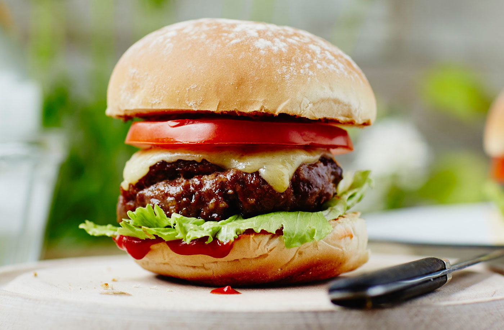

Burgers

Description:
A huge single or triple burger with all the fixings, cheese, lettuce,
tomato, onions and special sauce or mayonnaise!
Ingredients:
- ½ tbsp olive oil
- 1 onion finely chopped
- 500g Mince beef
- 1 egg beaten
- 4 slices mature Cheddar
- 4 Burger Buns
- Lettuce
- Tomato
- Ketchup to serve
Recipe:
- Add the onion and cook for 5 minutes until softened. Set aside.
- Combine the beef mince with the egg. Season, add the onions and mix well.
- Using your hands, shape into 4 patties.
- Cook the burgers for 5-6 minutes on each side.
- While the second side is cooking, lay a slice of cheese on top to melt.
- Lightly toast the buns in the pan.
- Fill with the lettuce, burgers and tomato slices.